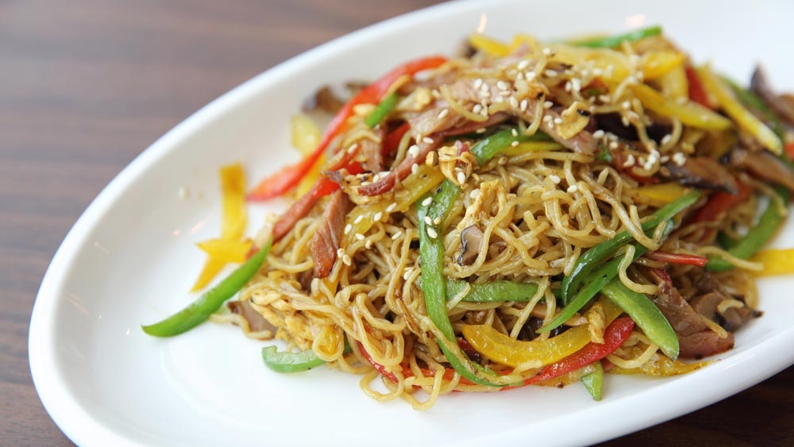

Chinese Fideos

Ingredients
- For the sauce
- tablespoons soy sauce
- 2 tablespoons oyster sauce
- 1 tablespoon dark soy sauce
- 1 tablespoon hoisin sauce
- 1 tablespoon sesame oil
- 1 teaspoon sugar
- For the Stir-Fry
- 8 ounces (about 225g) Chinese lo mein noodles or your preferred noodles
- 2 tablespoons vegetable oil (for cooking)
- 2 cloves garlic, minced
- 1 teaspoon fresh ginger, grated
- 1 cup sliced vegetables (such as bell peppers, carrots, broccoli, and snow peas)
- 1 cup protein of your choice (sliced chicken, beef, shrimp, or tofu)
- Green onions, chopped, for garnish
- Sesame seeds, for garnish (optional)
Steps for preparation
- Prepare the Noodles:
- Cook the noodles according to the package instructions.
and set aside.
- Make the Sauce:
- In a small bowl, mix together soy sauce, oyster sauce, dark soy sauce,
hoisin sauce, sesame oil, and sugar. Set aside.
- Stir-Fry:
- Heat vegetable oil in a wok or large skillet over medium-high heat.
- Add minced garlic and grated ginger, stir-fry for about 30 seconds until fragrant.
- Cook Protein and Vegetables:
- Add your choice of protein and cook until browned or cooked through.
- Add sliced vegetables and stir-fry for 2-3 minutes until they are tender-crisp.
- Combine Noodles and Sauce:
- Add the cooked noodles to the wok or skillet.
- Pour the prepared sauce over the noodles and toss everything together until well combined and heated through.
- Serve:
- Transfer the noodles and stir-fried ingredients to a serving platter.
- Garnish with chopped green onions and sesame seeds if desired.